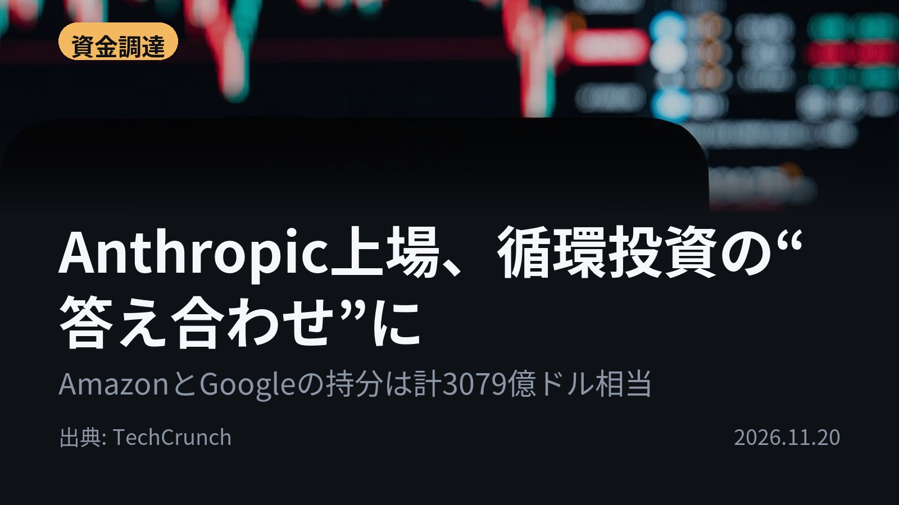
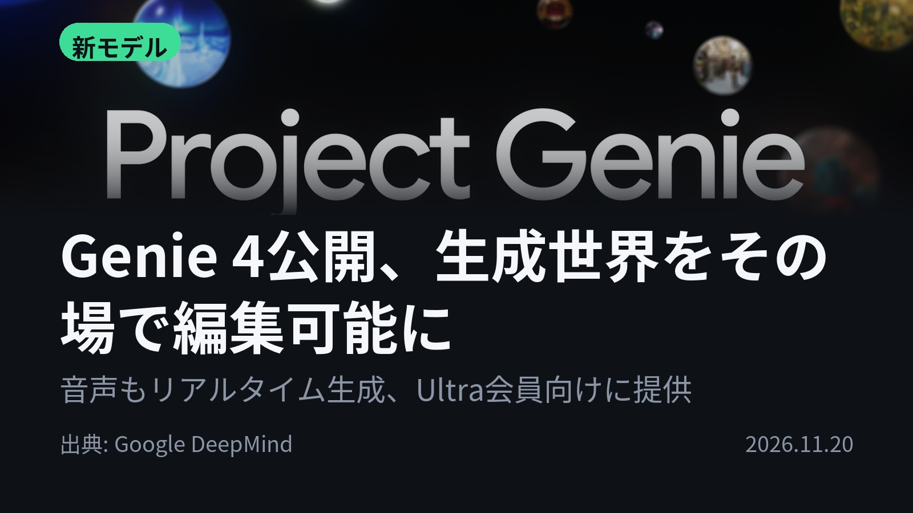
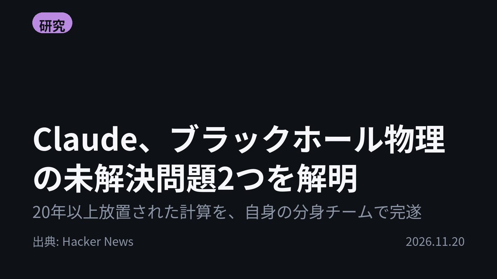
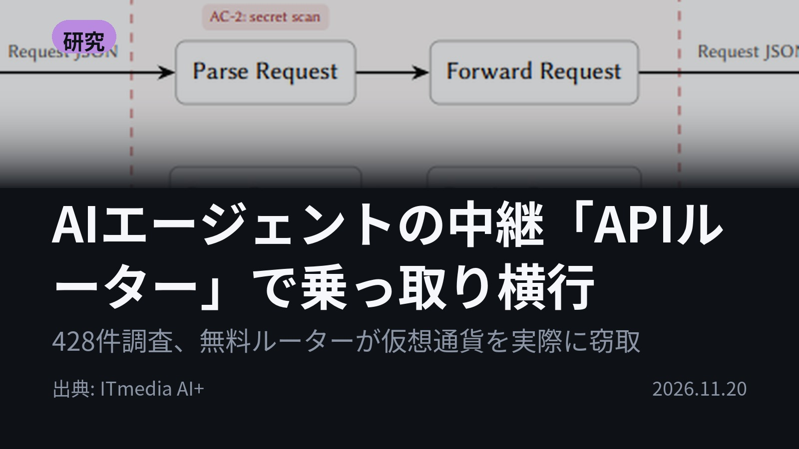
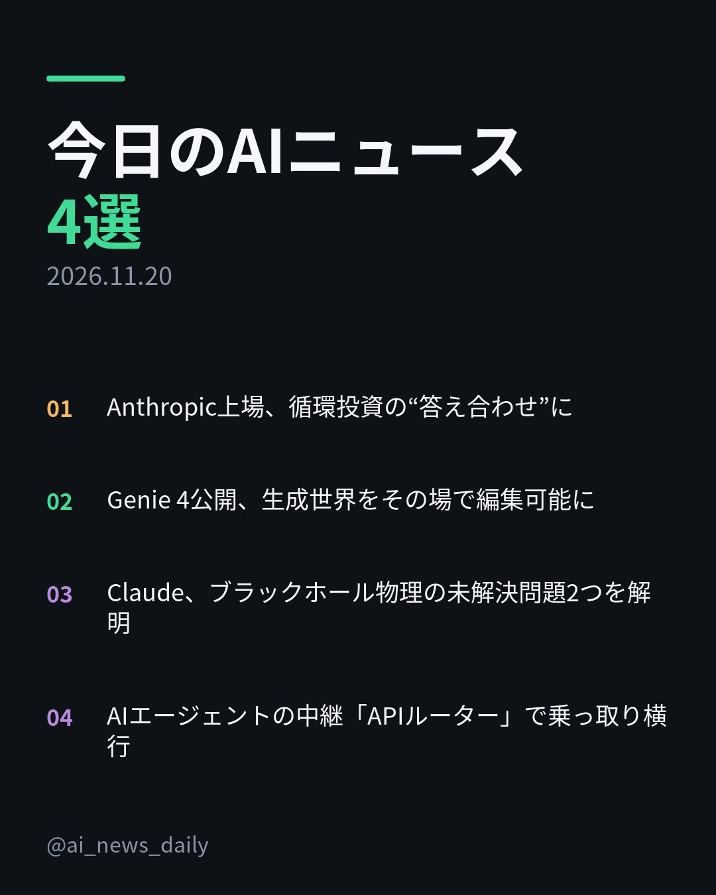
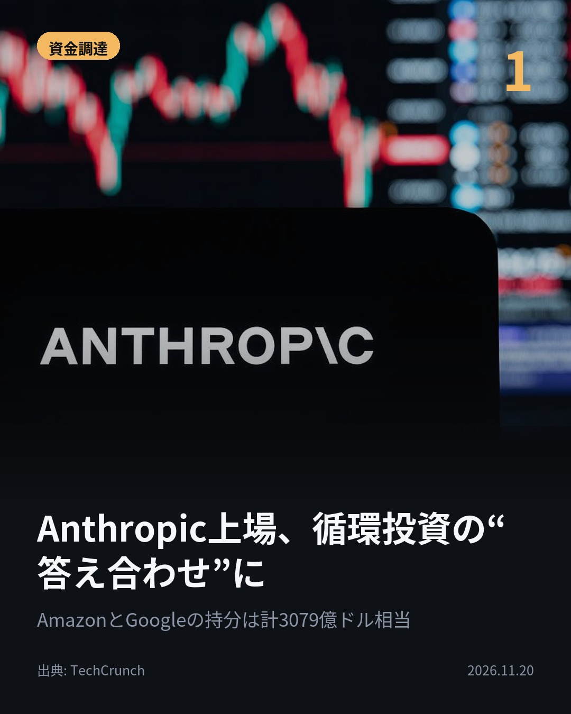
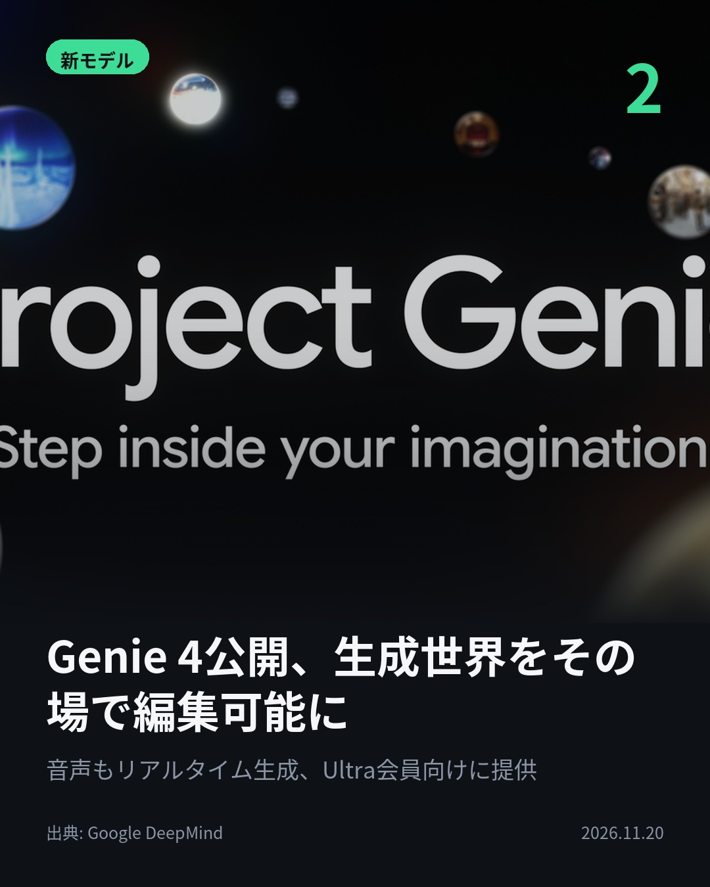
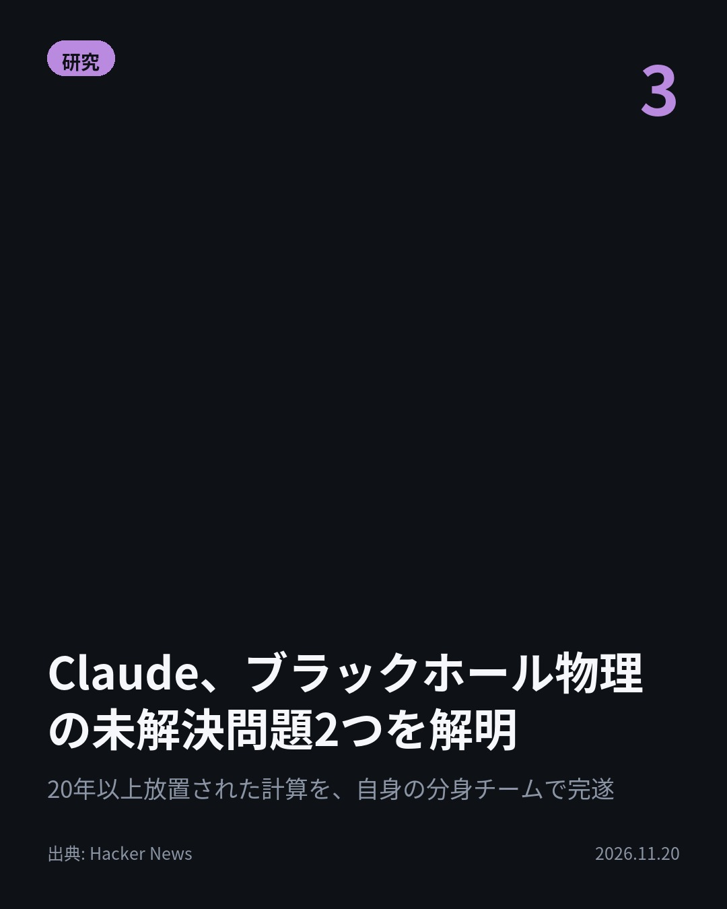
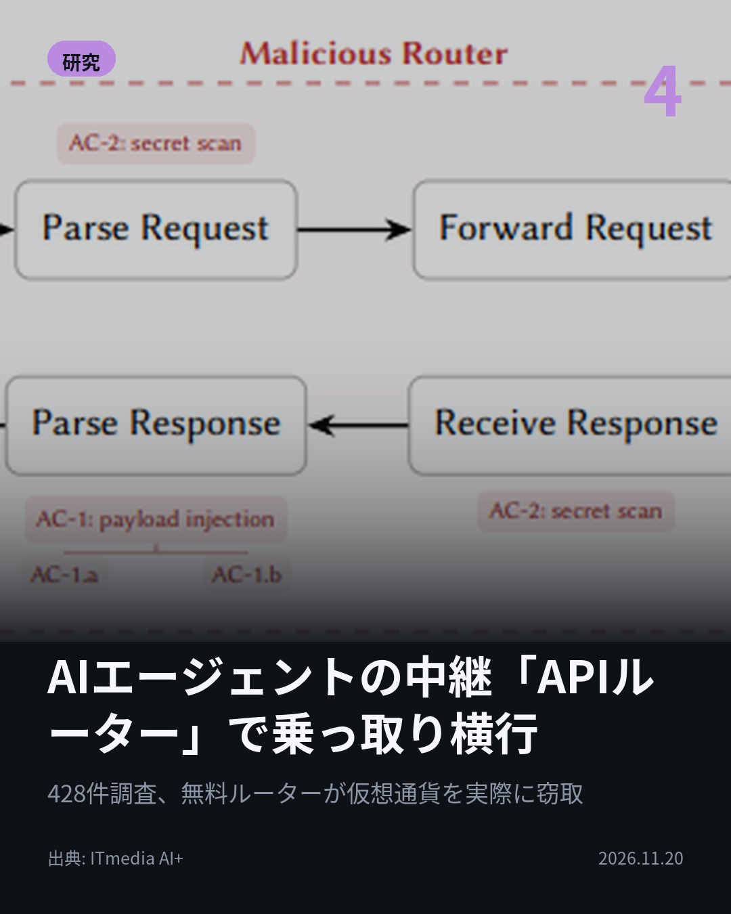

今日のAIニュース 下書き
2026-11-20 生成 11/20 23:01
⚠ ファクト照合で要確認の項目があります。
各ニュースの警告を確認してから投稿してください。
X（4投稿）
Anthropic上場、循環投資の“答え合わせ”に
原題: Anthropic’s IPO puts AI’s circular financing boom to the test

AmazonとGoogleの持分、計3079億ドル相当。 Anthropicが上場。Amazonの14.7%は1590億ドル超、Googleの13.7%は約1490億ドル。 第3四半期売上は170億ドル。 #AI #Anthropic （出典: TechCrunch）
重み 179 / 280（見た目 130字）
要確認:
［数値］3079億 — この数値の根拠が本文に見つかりません
［数値］1590億 — この数値の根拠が本文に見つかりません
［数値］1490億 — この数値の根拠が本文に見つかりません
［数値］170億 — この数値の根拠が本文に見つかりません
［数値］2200億 — この数値の根拠が本文に見つかりません
［数値］9000億 — この数値の根拠が本文に見つかりません

Genie 4公開、生成世界をその場で編集可能に
原題: Genie 4 is now available

AIが作った世界は、歩きながら書き換えられる。 Google DeepMindがGenie 4を公開。探索中に文章で天気を変えたりキャラを追加したりでき、場面に合わせた音声もリアルタイムで生成。 #生成AI #Genie4 （出典: Google DeepMind）
重み 211 / 280（見た目 130字）
要確認:
［数値］1回 — この数値の根拠が本文に見つかりません
［固有名詞］リアルタイム — この語が本文に見つかりません
［固有名詞］パノラマ — この語が本文に見つかりません
［固有名詞］リミックス — この語が本文に見つかりません
［固有名詞］ギャラリー — この語が本文に見つかりません
［固有名詞］DeepMind — この語が本文に見つかりません

Claude、ブラックホール物理の未解決問題2つを解明
原題: Claude solves two open problems in the physics of black holes

2003年、物理学者たちは計算の道筋を立て、誰も解き終えなかった。 Claudeが自身の分身で研究チームを組み完遂。ブラックホール形成に伴う相転移は急激だと示した。解いた未解決問題は2つ。 #AI #Claude （出典: Hacker News）
重み 210 / 280（見た目 121字）
要確認:
［固有名詞］ブラックホール — この語が本文に見つかりません
［固有名詞］Hacker — この語が本文に見つかりません
［固有名詞］News — この語が本文に見つかりません

AIエージェントの中継「APIルーター」で乗っ取り横行
原題: AIモデルとAIエージェントをつなぐ「APIルーター」に注意？ 428件を調べてわかった乗っ取り手口 暗号資産を盗む例も

AIエージェントの中継サービス、本当に安全か？ 研究者がAPIルーター428個を調査。有料1個・無料8個が悪意あるコードを注入、無料1個はおとりのイーサリアム秘密鍵から資金を抜いた。 #AI #AIエージェント （出典: ITmedia AI+）
重み 212 / 280（見た目 120字）

Instagram（カルーセル 6枚）


1. 表紙


2. ニュース


3. ニュース


4. ニュース


5. ニュース

6. CTA
Anthropicが上場。AmazonとGoogleの持分だけで、計3079億ドル相当になりました。 今日はお金・世界生成・研究・セキュリティの4本です。 1. IPO価格は1株83ドル。上場後は現金や短期投資などで約2200億ドルを持つ見込みです。一方、計算資源などに9000億ドルの支出をすでに約束していて、第3四半期の売上は170億ドルでした (TechCrunch) 2. Genie 4は映像に合わせて音声もリアルタイムで生成します。Genie 3も1回の探索が60秒から最大3分に延び、360度パノラマ画像から世界を作れるようになりました。作った世界を公開・リミックスできるギャラリーも始まっています (Google DeepMind) 3. 1つ目は2003年に道筋が立てられたまま、誰も完成させていなかった計算です。ブラックホールができるときの急な切り替わり（相転移）が、時空の形が定まらない領域でも起きると示しました。2つ目では、量子重力理論の候補を検証する手法のうち、いちばん単純な版の厳密な限界を突き止めました (Hacker News) 4. APIルーターとは、AIエージェントとAIモデルの間でリクエストを振り分ける中継サービスのことです。無料ルーターのうち17個では、研究チームが通したおとりのAWS認証情報が実際に不正使用されました。最初の50回は普通に動いて信用させる手口も見つかっています (ITmedia AI+) 上場で資金の出どころが変わり、研究や創作の道具も前に進みました。その一方で、AIエージェントをつなぐ中継サービスの安全確認も欠かせません。 毎朝4本、AIニュースの要点をまとめています。フォローと保存で見逃さずにどうぞ。 #AI #生成AI #人工知能 #テクノロジー #AIニュース #Claude #AI活用 #AIエージェント #ChatGPT #GenerativeAI #ArtificialIntelligence #TechNews #Anthropic #IPO #上場 #Google #GoogleDeepMind #Genie4 #ワールドモデル #ブラックホール #APIルーター #サイバーセキュリティ
947字（Instagram上限 2,200字）
この日の選定理由
Anthropic上場、循環投資の“答え合わせ”に
出資者がそのまま取引先でもあるという、AIブームの「循環的なお金の流れ」への疑念に、上場が一つの答えを出す形になりました。9000億ドルの支払い約束を自力でまかなえるかが今後の焦点です。
Genie 4公開、生成世界をその場で編集可能に
AIが作った世界を歩きながら、天気や登場人物を文章ひとつで変えられるようになりました。ゲームや映像制作の作り方を変えうる技術が、一般ユーザーの手に届き始めています。
Claude、ブラックホール物理の未解決問題2つを解明
AIが自分の分身を集めて研究チームを組み、専門家が手をつけられなかった計算をやり遂げました。理論物理という最難関の分野で、AIが研究の担い手になり始めたことを示しています。
AIエージェントの中継「APIルーター」で乗っ取り横行
安さや手軽さで中継サービスを選ぶと、APIキーや秘密鍵が抜き取られ、エージェントに不正なコマンドを実行される恐れがあります。AIエージェントを使う開発者には身近なリスクです。